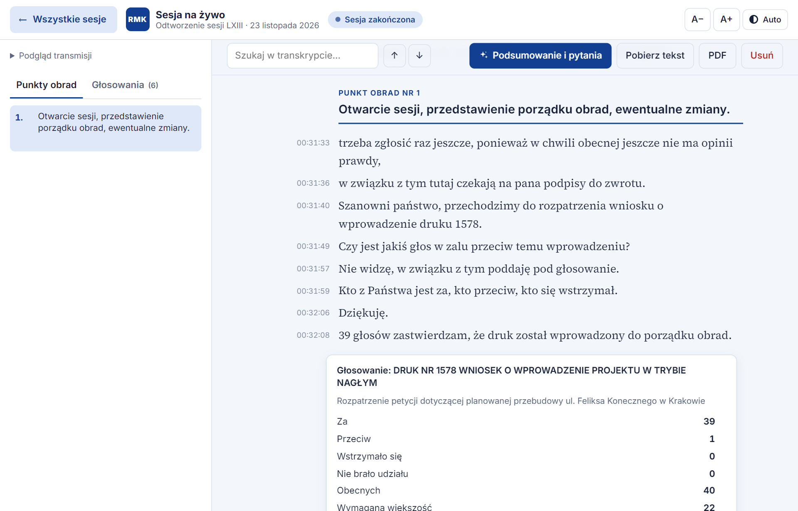
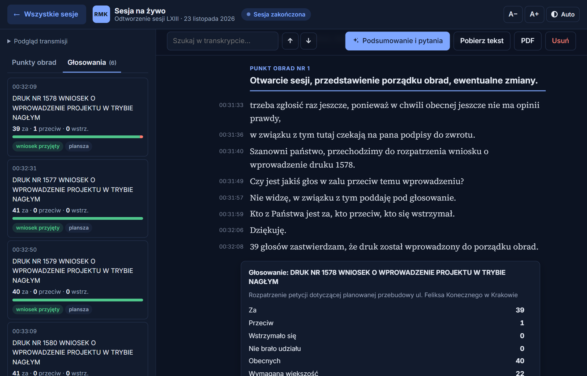
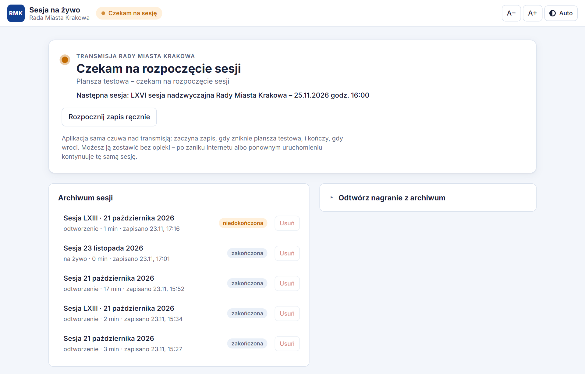
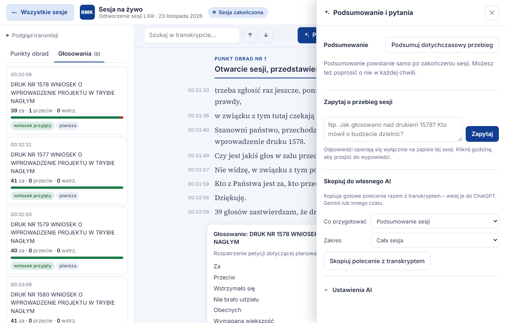

Co robi
Transkrypt na żywo
Pełne zdania z godziną wypowiedzi, wyszukiwanie i wygodna kolumna do czytania. Tryb jasny i ciemny.
Punkty obrad i głosowania
Odczytuje planszę systemu głosowań z transmisji: druk, liczby za/przeciw/wstrzymało się i wynik. Wyniki imienne dociąga z BIP.
Podsumowanie i pytania
Protokolarne podsumowanie i odpowiedzi z odnośnikami do wypowiedzi (darmowy klucz Gemini). Bez klucza – gotowe polecenie do skopiowania do własnego czatu AI.
Bez opieki
Sama zaczyna zapis, gdy zacznie się sesja, i kończy po niej. Zanik internetu czy restart komputera nie przerywa zapisu sesji.
Archiwum i PDF
Każda sesja zostaje w archiwum na komputerze. Eksport do PDF z przebiegiem, tabelą głosowań i pełnym transkryptem.
Odtworzenie archiwum
Dowolną archiwalną sesję z BIP można odtworzyć tak, jakby trwała na żywo – dobre do pokazania, jak to działa.
Jak to wygląda




Jak zacząć
-
Pobierz plik ZIP
Kliknij Pobierz dla Windows i zapisz plik SesjaRMK.zip, np. w folderze Pobrane.
-
Rozpakuj
Kliknij plik prawym przyciskiem myszy → Wyodrębnij wszystkie… → Wyodrębnij. Powstanie folder SesjaRMK. Nie uruchamiaj aplikacji z wnętrza ZIP-a.
-
Uruchom i przejdź ostrzeżenie Windows
W folderze kliknij dwukrotnie SesjaRMK.exe. Przy pierwszym uruchomieniu Windows może pokazać niebieskie okno „System Windows ochronił ten komputer”. To normalne dla małych, darmowych programów bez płatnego podpisu cyfrowego.
Kliknij Więcej informacji, a potem Uruchom mimo to.
[zrzut ekranu okna SmartScreen – zostanie dodany] -
Pierwsze uruchomienie
Otworzy się przeglądarka z aplikacją. Za pierwszym razem aplikacja pobiera model rozpoznawania mowy (ok. 1,5 GB) i sprawdza, jak szybki jest komputer – to może potrwać kilka minut. Potem start trwa kilka sekund.
Gotowe. Zostaw aplikację włączoną: sama rozpocznie zapis, gdy zacznie się sesja.
-
Opcjonalnie: darmowy klucz Gemini do podsumowań
Podsumowania i pytania korzystają z AI Google Gemini – bezpłatnie, z dziennym limitem.
Wejdź na aistudio.google.com/apikey, zaloguj się kontem Google, kliknij Create API key i skopiuj klucz. W aplikacji otwórz sesję → Podsumowanie i pytania → wklej klucz → Zapisz.
[zrzuty ekranu AI Studio – zostaną dodane]Bez klucza też możesz korzystać z AI: przycisk „Skopiuj polecenie z transkryptem” przygotuje tekst do wklejenia w ChatGPT, Gemini lub inny czat.
Wymagania
- Windows 10 lub 11, 64-bitowy.
- Procesor z co najmniej 4 rdzeniami i 8 GB pamięci RAM. Karta graficzna nie jest potrzebna.
- Ok. 3 GB wolnego miejsca na dysku i internet (transmisja ma ok. 2 Mb/s).
- Na czas sesji nie zamykaj pokrywy laptopa – aplikacja sama blokuje usypianie, ale zamknięcie pokrywy może je wymusić.
Najczęstsze pytania
- Czy to oficjalne narzędzie Urzędu Miasta?
- Nie. To nieoficjalna, prywatna inicjatywa. Wiążący jest protokół i stenogram publikowany w BIP.
- Czy transkrypt jest dokładny?
- Rozpoznawanie mowy jest automatyczne i bywa błędne, zwłaszcza przy nazwiskach. Wyniki głosowań aplikacja odczytuje z planszy w transmisji i porównuje z odczytem przewodniczącego i z BIP.
- Co się stanie, gdy padnie internet?
- Aplikacja ponawia połączenie bez końca. Krótkie przerwy (do ok. 5 minut) uzupełnia z zapisu transmisji, dłuższe oznacza w transkrypcie.
- Gdzie są moje dane?
- Wszystko zostaje na Twoim komputerze. Do Google trafia tylko tekst sesji, gdy sam poprosisz o podsumowanie lub zadasz pytanie z kluczem Gemini.
- Jak zaktualizować?
- Gdy pojawi się nowa wersja, aplikacja pokaże komunikat z linkiem. Pobierz nowy ZIP i rozpakuj go w miejsce starego folderu – zapisane sesje zostaną.